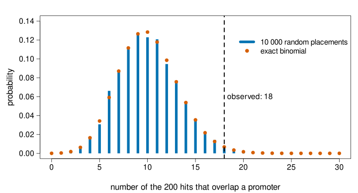
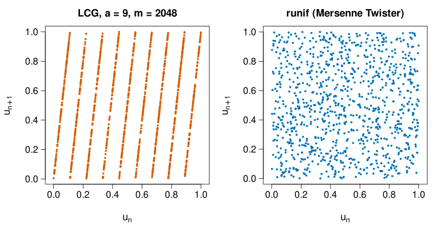
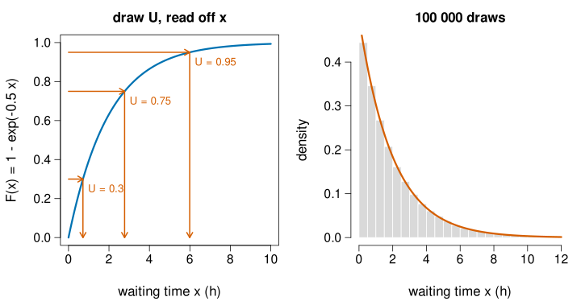
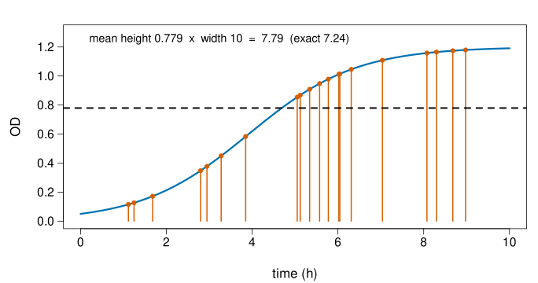
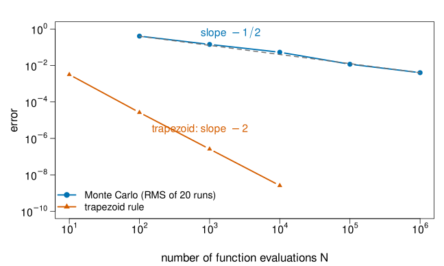
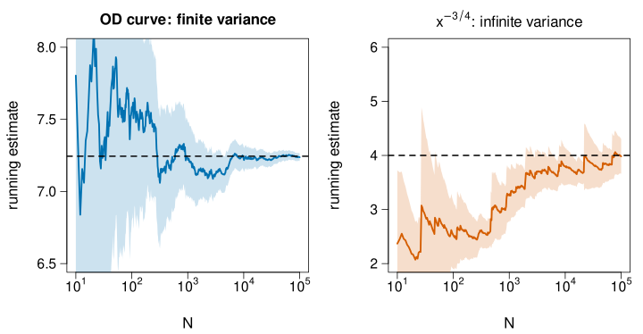
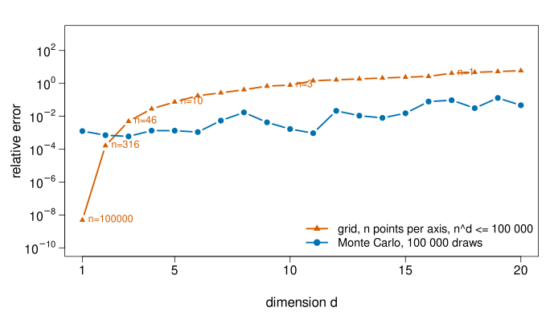
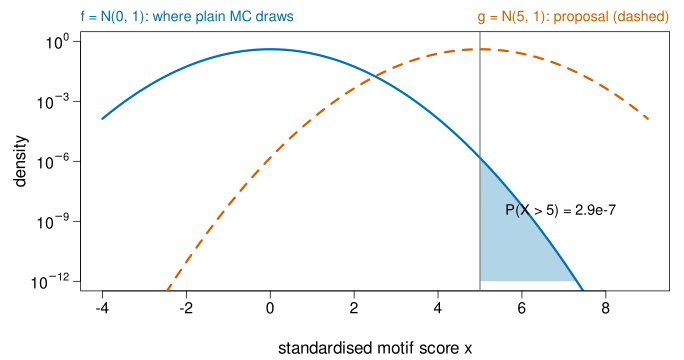

Part 7 — Numerical differentiation and integration
Numerical analysis for biologists
About this lecture
Numerical integration placed points on a grid. This lecture places them at random, and answers questions a grid cannot.
A computer makes “random” numbers with a deterministic recipe. A seed fixes the whole stream, which makes results reproducible.
Inverse-transform and rejection sampling turn uniform numbers into draws from other distributions.
Monte Carlo integration: an integral is an average, so estimate it by a sample mean, with a standard error as the error bar. The error falls like 1/\sqrt{N}, whatever the dimension.
That is slow in 1-D but beats any grid in many dimensions (the curse of dimensionality).
Importance sampling makes rare events visible.
Biology: are motif hits enriched in promoters (a permutation-style test)? A marginal likelihood in 10 dimensions.
A biology problem first
A ChIP-seq peak caller reports 200 hits of a TF motif (10 bp) in a 1 Mb region. 18 of them overlap one of the region’s 50 promoters (1 kb each, 5% of the region). Is that more than chance?
G <-1e6; L <-10# region and motif length (bp)pstart <-seq(10001, by =20000, length.out =50) # 50 promoters of 1 kbpend <- pstart +999n_hits <-200; k_obs <-18p <-50* (1000+ L -1) / (G - L +1) # P(one random hit overlaps a promoter)n_hits * p # expected number of overlaps# [1] 10.09009pbinom(k_obs -1, n_hits, p, lower.tail =FALSE) # exact P(K >= 18)# [1] 0.01314003
A hit overlaps a 1 kb promoter if its start is in a window of 1000 + L - 1 = 1009 positions. With independent uniform starts, K \sim \text{Binomial}(200, p).
Here an exact answer exists. Change the null model a little and it does not.
Simulate instead: a permutation-style test
Place the 200 hits at random, count overlaps, repeat 10 000 times.
overlaps <-function(s) { # s: start positions of the hits i <-findInterval(s + L -1, pstart) # last promoter starting before hit end i >0& pend[pmax(i, 1)] >= s}set.seed(1)K <-replicate(10000, sum(overlaps(sample.int(G - L +1, n_hits, replace =TRUE))))mean(K >= k_obs) # simulated P(K >= 18)# [1] 0.0122
Simulated 0.0122 vs exact 0.0131. The difference is Monte Carlo error: about \sqrt{0.012 \cdot 0.988 / 10\,000} = 0.0011.
The simulation needs no formula. Real nulls do not have one: keep hits out of gaps and repeats, match GC content, forbid overlapping hits. Change the placement line, keep the rest.
Simulated vs exact

Bars: the 10 000 simulated counts. Dots: the exact binomial probabilities. The p-value is the mass at or right of the dashed line.
Report a simulated p-value as (k+1)/(B+1) (k of B simulations as extreme), so it is never exactly 0.
A second problem: an integral in 10 dimensions
A model with d = 10 parameters \theta (e.g. log fold changes of 10 genes in a pathway), prior \pi(\theta), likelihood L(\theta). To compare it with another model (a Bayes factor) we need the marginal likelihood
Z = \int L(\theta)\,\pi(\theta)\,d\theta_1 \cdots d\theta_{10}.
Z is the normalising constant of the posterior L(\theta)\pi(\theta)/Z.
A grid with only 10 points per axis needs 10^{10} likelihood evaluations. At 1 µs each: 3 hours. With 100 points per axis: 10^{20} evaluations, about 3 million years.
But Z = \mathrm{E}_\pi[L(\theta)]: the average likelihood over draws from the prior. An average can be estimated from a sample.
Random numbers are computed
A linear congruential generator (LCG): x_{n+1} = (a\,x_n + c) \bmod m, \;u_n = x_n / m.
lcg <-function(n, seed, a =5, c =1, m =16) { x <-numeric(n); x[1] <- seedfor (i in2:n) x[i] <- (a * x[i -1] + c) %% m # %% is "mod" x}lcg(18, seed =1)# [1] 1 6 15 12 13 2 11 8 9 14 7 4 5 10 3 0 1 6lcg(8, seed =7)# [1] 7 4 5 10 3 0 1 6
Entirely deterministic: the seed fixes the whole sequence. Another seed starts at another place in the same cycle.
After at most m steps the sequence repeats (period 16 here). Real generators have astronomically long periods.
Bad generators leave patterns

Successive pairs of an LCG lie on a few lines.
RANDU (a = 65539, m = 2^{31}, 1960s IBM) puts all triples on 15 planes:
u <-randu(30000) # exercise C1v <-9* u[1:29998] -6* u[2:29999] + u[3:30000]table(round(v)) # only -5..9
Check: plot u_{n+1} against u_n; use the language’s default generator, never a home-made one.
set.seed(42); runif(3)# [1] 0.9148060 0.9370754 0.2861395set.seed(42); runif(3) # same seed: same numbers# [1] 0.9148060 0.9370754 0.2861395runif(3) # the stream continues# [1] 0.8304476 0.6417455 0.5190959
The same seed in another language gives other numbers (numpy: 0.774, 0.439, 0.859). Compare results statistically, never digit by digit.
Seeds and reproducibility
set.seed(42); sample(10, 3) # R >= 3.6# [1] 1 5 10RNGversion("3.5.0"); set.seed(42); sample(10, 3) # R before 3.6# [1] 10 9 3
R changed how sample() turns uniform numbers into integers in version 3.6 (the old way was slightly biased). Same seed, different result. Record the software version with the seed (sessionInfo()).
Set the seed once, at the top of a script, not inside a loop (re-seeding with the same value repeats the same numbers).
A seed makes a run reproducible, not correct: a result that changes with the seed by more than its error bar is not a result. Try a few seeds.
Parallel runs need separate streams (parallel::RNGStreams, numpy SeedSequence.spawn), not seeds 1, 2, 3 by hand.
Inverse-transform sampling

If U \sim \text{Uniform}(0, 1) and F is a CDF, then X = F^{-1}(U) has CDF F. Exponential waiting time (rate \lambda): u = 1 - e^{-\lambda x} \Rightarrow x = -\log(1 - u)/\lambda.
Inverse transform in R
set.seed(1)lambda <-0.5# bursts per hourx <--log(runif(1e5)) / lambda # F^{-1}(1 - U), and 1 - U is uniform tooc(mean(x), sd(x)) # both should be 1 / lambda = 2# [1] 2.007696 2.011384prob <-c(A =0.3, C =0.2, G =0.2, T =0.3) # base compositionu <-c(0.45, 0.95)names(prob)[findInterval(u, c(0, cumsum(prob)))] # discrete inverse transform# [1] "C" "T"
Discrete case: cut [0, 1) into pieces of length p_k (cumulative sums) and see where U falls. This is what sample() does with prob =.
Check: compare sample mean, sd or histogram with the target. R’s own rexp, qnorm(runif(n)) (R’s default for rnorm) do the same.
Rejection sampling (when F^{-1} is hard)
Target density f, easy proposal g, constant M with f \le M g. Draw x \sim g, accept with probability f(x)/(M g(x)).
f <-function(x) 20* x * (1- x)^3# Beta(2, 4) density on [0, 1](M <-f(1/4)) # its maximum: f <= M * 1 (uniform g)# [1] 2.109375set.seed(1)x <-runif(1e5) # proposalskeep <-runif(1e5) <f(x) / M # accept or rejectc(mean(keep), mean(x[keep])) # acceptance ~ 1/M; Beta(2,4) mean = 1/3# [1] 0.4737500 0.3338191
Accepted points are exact draws from f. The acceptance rate is 1/M.
Failure: a poor g gives a huge M; in d dimensions M typically grows exponentially and almost nothing is accepted. Check: print the acceptance rate.
Monte Carlo integration

\int_a^b f(t)\,dt = (b - a)\,\mathrm{E}[f(U)], \quad U \sim \text{Uniform}(a, b) \quad\Rightarrow\quad \hat I_N = \frac{b-a}{N}\sum_{i=1}^N f(U_i).
Monte Carlo in R, with an error bar
K <-1.2; N0 <-0.05; r <-0.8od <-function(t) K / (1+ (K / N0 -1) *exp(-r * t))set.seed(1)N <-1000fx <-10*od(runif(N, 0, 10)) # (b - a) f(U_i)c(estimate =mean(fx), se =sd(fx) /sqrt(N))# estimate se# 7.2188630 0.1306143integrate(od, 0, 10) # for comparison# 7.244448 with absolute error < 3.2e-06
Standard error\text{SE} = s/\sqrt{N}, s = sample sd of the (b-a) f(U_i). Report 7.22 \pm 0.26 (\pm 2\,\text{SE}, about 95%).
The true error (-0.026) is well inside the error bar. The SE comes free, from the same sample.
The error falls like 1/\sqrt{N}

Monte Carlo: slope -\tfrac12. 100 times more samples for one more digit. For \pm 0.01 on the AUC: N \approx (2 \cdot 4.13 / 0.01)^2 \approx 680\,000.
Trapezoid: slope -2 in 1-D. In one dimension, Monte Carlo is a bad idea.
Try it: watch the error fall like 1/\sqrt{N}
When the error bar lies

\int_0^1 x^{-3/4}\,dx = 4 is finite, but \int_0^1 (x^{-3/4})^2 dx = \infty: infinite variance. The estimate creeps up in jumps, and the \pm 2 SE band misses 4 for long stretches.
Check: plot the running estimate; repeat with a few seeds. Jumps or SEs that disagree between seeds mean the SE is not to be trusted.
The curse of dimensionality
N function evaluations in d dimensions:
grid, n points per axis
Monte Carlo
points per axis
n = N^{1/d}
(no grid)
error, trapezoid-like rule of order 2
n^{-2} = N^{-2/d}
\sigma / \sqrt{N}
N = 10^6, d = 1
10^6 per axis
N = 10^6, d = 10
3–4 per axis
same 1/\sqrt{N}
A grid’s error rate gets worse with every dimension; Monte Carlo’s rate does not depend on d. They break even at d = 4 for a second-order rule.
The constant\sigma can still grow with d (see importance sampling).
The marginal likelihood in 10 dimensions
Toy model with a known answer: prior \theta_i \sim N(0, 1), one measurement y_i = 1 per parameter with noise sd 1. Then Z = \phi(1; 0, \sqrt2)^{10}.
d <-10; y <-rep(1, d)lik <-function(th) exp(colSums(dnorm(y, th, sd =1, log =TRUE))) # th: d x NZ_exact <-dnorm(1, 0, sqrt(2))^dnodes <-qnorm((1:3-0.5) /3) # 3 prior quantiles per axisgrid <-t(as.matrix(expand.grid(rep(list(nodes), d)))) # 3^10 = 59049 pointsset.seed(1)th <-matrix(rnorm(d *59049), nrow = d) # 59049 draws from the priorL <-lik(th)c(exact = Z_exact, grid =mean(lik(grid)), mc =mean(L), se =sd(L) /sqrt(59049))# exact grid mc se# 2.619476e-07 4.668612e-07 2.633375e-07 5.102569e-09
Same budget: the grid is 78% wrong; Monte Carlo is off by 0.5%, with an honest SE of 2%.
Grid vs Monte Carlo as d grows

Budget 10^5 evaluations. The grid wins for d \le 2, is level at d = 3, loses from d = 4, and at d \ge 17 has one point per axis.
Monte Carlo’s error grows slowly with d: here the variance of L under the prior grows like 1.36^d.
Rare events: plain Monte Carlo sees nothing

A motif score of a random sequence is roughly normal (a sum over positions). P-value of a hit with standardised score above 5: P(X > 5) = 2.87\times10^{-7}.
set.seed(1); mean(rnorm(1e5) > 5) gives 0, with SE 0: a confident wrong answer. For 10% relative error, plain MC needs N = 100/p \approx 3.5 \times 10^8.
Importance sampling
Draw from a proposal g that puts points where the integrand matters, and reweight:
The variance of w is infinite: a few draws in the tail carry huge weights. Over seeds the SE ranges from 0.011 to 0.029.
Check: the effective sample size, here 3 306 of 100 000. With g = N(0, 2^2) (heavier tails): ESS 65 997, SE 0.0023.
Rule: the proposal must have heavier tails than |h| f.
Checklist: is my Monte Carlo answer right?
Seed set once at the top, software version recorded; result stable over a few seeds.
Every estimate has an error bar: estimate \pm 2\,\text{SE}, \text{SE} = s/\sqrt{N}.
Code tested on a case with a known answer (the binomial overlap, the toy Z).
Running estimate plotted: smooth 1/\sqrt{N} narrowing, no jumps.
Rare events: zero hits is not a probability of zero; use importance sampling, or report p < 1/N.
Weights: check the effective sample size and the largest weight.
In 1–3 dimensions with a smooth integrand, use quadrature (integrate) instead.
Summary
Pseudo-random numbers are deterministic streams from a seed. Use the default generator (R: Mersenne Twister, numpy: PCG64, Rust: ChaCha12); streams differ between languages.
Inverse transformX = F^{-1}(U); rejection when F^{-1} is unknown (acceptance rate 1/M).
Monte Carlo integration: integral = average; estimate \pm 2\,s/\sqrt{N}. Error \propto N^{-1/2} in any dimension, if the variance is finite.
Curse of dimensionality: a grid’s error N^{-p/d} collapses with d; Monte Carlo wins from d \approx 4.
Importance sampling for rare events and peaked integrands; check the effective sample size.
Biology: motif enrichment by simulated placement (permutation-style test); marginal likelihood as an average over prior draws.